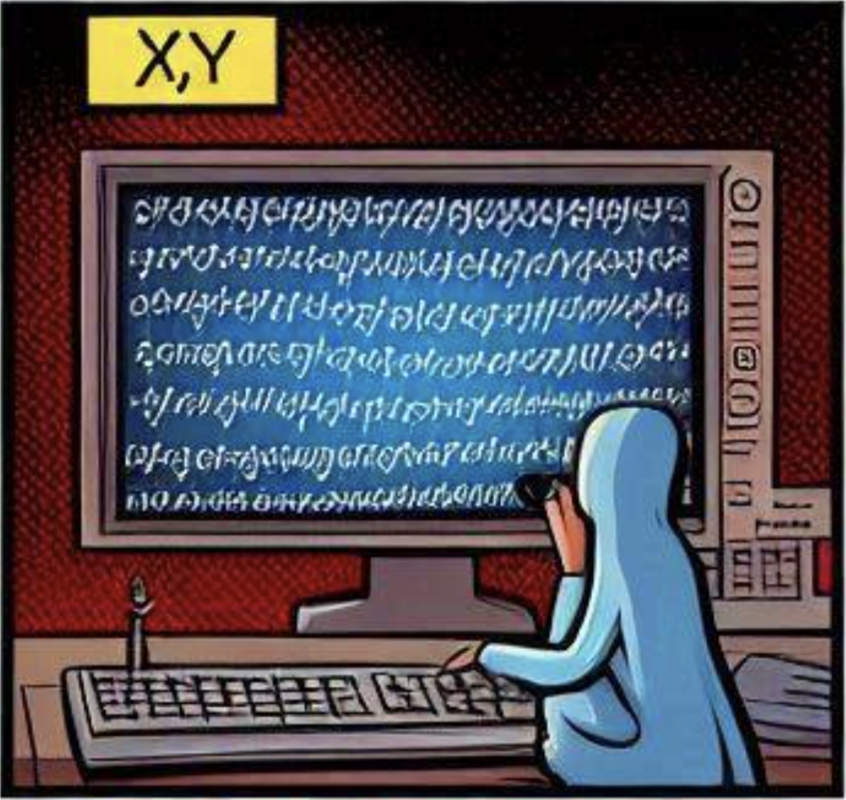

Mõni nädal tagasi toimus ühe meie projekti, OpenSuperQ+ (OSQ+), iga-aastane konsortsiumikoosolek. OSQ+ eesmärk on luua Euroopa Liidus valmistatud kvantarvuti virn, mis põhineb ülijuhtivate kvantseadmete kvantbitidel. Lisaks uurimislaboritele, mis ehitavad tegelikke kvantkiipe, hõlmab OSQ+ ka ettevõtteid, kes tegelevad näiteks kvantseadmete juhtimiseks vajaliku digitaal-analoog elektroonikaga, saates mikrolaineimpulsse kvantkiibile või käitades klassikalise arvuti kaudu madalaima taseme kvant-operatsioonisüsteemi, mis juhib seda elektroonikat. Tartu Ülikool on aktiivne tasemel, mis asub mikrolaineimpulsside kohal: töötame kvantloogikaväravatega süsteemitasandil, mis asub kvantalgoritmide ja -rakenduste kirjutamise kasutajataseme all.
Minu arvates on selle kvantarvuti virna taseme kõige olulisem aspekt kvantvea parandus ja veataluv kvantarvutamine. Esiteks kasutatakse kvantveaparanduskoode kvantkiibil oleva kvantinfo kaitsmiseks korruptsiooni eest. Teiseks, muidugi, soovite mitte ainult kaitsta kvantinfot, vaid ka sellega arvutada.
Räägitakse kvantmälust, kui kvantinfo kaitsmine kvantvea eest on fookuses, võrreldes selle töötlemisega. Kvantviga esineb kahes vormis: üks on viga, mis on põhjustatud kvantkiibiga ebatäiuslikust koostoimest. Iga kvantloogikavärava käivitamine võib tekitada vigu. Teine kvantvea vorm tekib ilma tahtliku koostoimeta. Tegelikult on igal mikrosekundil igal füüsilisel kvantbiti teatud tõenäosus olla rikutud. Selle teise vea vormi tõttu peab isegi kvantmälu – st kui soovite lihtsalt kvantinfot mõneks millisekundiks salvestada, kuid te ei kavatse selle aja jooksul sellega arvutusi teha – käitama veaparandustsükleid:
- Hankige vea sündroom mõõtmiste kaudu;
- Leidke kõige tõenäolisem viga, mis põhjustas sündroomi;
- Tühistage viga;
- Goto (1).
Vea sündroom koosneb bittidest, laias laastus üks bitt iga füüsilise kvantbiti kohta. Täpsemalt öeldes võrdub füüsiliste kvantbittide arv vea sündroomi bittide arvu pluss kaitstud kvantinfo kvantbittide arv. Kuid iga sündroomibiti ekstraheerimine kvantkiibilt nõuab juba väikeste kvantskeemide käivitamist. (Te ei arvanud ometi, et mõõdame lihtsalt füüsilisi kvantbitte, eks? Sest see purustaks neis sisalduva kvantinfo.) Need väikesed kvantskeemid ise põhjustavad vigu – ja madu püüab oma saba süüa. Räägitakse veataluvast kvantmälust, kui kvantskeemid on üles seatud nii, et kõik töötab välja.
Kvantveaparanduse teemat käsitleti loomulikult ka OSQ+ ürituse sessioonides, kuna teekond veataluva kvantarvutamiseni ei ole veel selge. Tõenduseks sellele on asjaolu, et IBM on oma tehnoloogias teinud strateegilise muudatuse: nad kasutavad kvantmälude jaoks uut niinimetatud kvasi-tsüklilist kvantveaparandus koodi, lisaks hästi väljakujunenud plaanidele kasutada arvutamiseks niinimetatud pinnakoode. See muutus tuleb kuluga, kuna kvantkiipide, mis võimaldavad kvasi-tsükliliste koodide käivitamist, ehitamine on keerulisem.
Kuna teekond veataluvuseni pole veel täielikult välja selgitatud, on palju küsimusi. Üks neist puudutab klassikalist elektroonikat, mida kasutatakse sammudes nr 2 ja nr 3. Samm nr 2 nõuab üsna keeruka klassikalise optimeerimisalgoritmi käivitamist. Mis puudutab sammu nr 3, siis võib olla üllatav, et see hõlmab klassikalist elektroonikat, kuna naiivne mõtlemine eeldaks muutusi füüsiliste kvantbittide olekus. Kuid kuna iga koostoime kvantseadmega on kallis ja potentsiaalselt tekitab uusi vigu, parandame vanad vead lihtsa trikiga: selle asemel, et öelda, pöörata teatud füüsilist kvantbiti, me lihtsalt “mäletame” püsivaras, mis töötab juhtimiselektroonikal, et see füüsiline kvantbit oleks pidanud pöörama, ja siis levitame seda teavet tulevaste koostoimete kaudu selle füüsilise kvantbitiga. Selle levitamisprotsessi käigus võib see pööre levida teistele kvantbittidele, nt. bitflip kvantbiti eel enne CNOT väravat võib samuti põhjustada vajaduse mäletada bitflip teise kvantbiti jaoks. Vajadus mäletada pöördeid lõpeb ainult mõõtmistega. See tähendab, et igal ajahetkel hoiab ja värskendab püsivara iga füüsilise kvantbiti lippe.
Kummalisel kombel saab äärmuslikul juhul kõiki veaparandusi edasi lükata, kuni kogu kvantprotsess on lõppenud. Jah, lugesite õigesti: selle asemel, et käivitada samme (1-2-3) kord mikrosekundis, käivitate lihtsalt sammu nr 1 kord mikrosekundis ja salvestate kõik tulemuseks olevad veasündroomid. Kui kvantprotsess on lõpetatud, teete esimest korda sammu nr 2, levitate vead, muudate mõõtmistulemusi vajaduse korral, mis viib muudetud sisenditeni teiseks korraks, kui teete sammu nr 2, ja nii edasi. Selle veaparanduse ja -paranduse edasilükkamise eest tuleb muidugi maksta ja see on üsna peen – võib-olla arutame seda mõnes teises blogipostituses.
Ma leian, et praegune kvantarvutite ehitamise ajastu on ülimalt põnev: Milliseid kvantveakorrigeerimise koode kasutada, milliseid väikseid kvantskeeme valida sündroomi mõõtmiseks, milliseid põhitoiminguid teostada kodeeritud kvantinformatsiooniga ja millist teostust valida nende põhitoimingute jaoks kvantveakorrigeerimiskoodis — kõik see on veel avatud ja ootab sinu ideid ja panust. Sa võiksid olla üks pioneere, kes kavandab ja rakendab esimeste kvantarvutite põlvkondade püsivara.